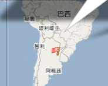

2011年04月3日
这里可以让我们打一个洞，一个穿过我们的小球的洞。来看看你脚下的出口在哪里吧！ 操作方法：在地图上点一下，出现一个绿色的小旗，再点这个小旗，在弹出窗口中点击“Dig here！”。然后会出现一个小红旗，看看你的小红旗会出现在哪里？
我出现在这里：》
2011年03月30日
转贴自：http://lcan.info/2011/03/cli-software/
作者：Lanpice
作为Linuxer，必须具备一定的CLI操作能力。有时候用CLI会比用GUI会更方便快捷。
以下列出我所知道的一些常用CLI软件，仅供参考。
2011年 02月 10日 星期四 22:24:37 CST
都说“干净冬至邋遢年”，可是今年过年的天气却出忽意料的好，每天都有太阳，温度从年前的个位数直升到两位数。更难得的是我居然连续休息了七天，这真是一个奇迹啊！可是我觉得今年是最没有年味的一年。
首先是今年的烟火味不浓。除夕之夜没听到几声鞭炮，也没有嗅到浓浓的火药味。大年初一起床居然也没有看见满地的纸屑，只有一小坨纸屑在阳光下无力的趴着。年初一到年初四回想起来就没有听到焰火鞭炮声，就算是有，也不过如窗外的小鸟一掠而过。直到初四初五之交才骤然热闹了几分钟，不过几分钟而已，又复归平静。
其次是今年居然没有年饱的感觉，用李逵的话说就是“口中淡出鸟儿”。最近好多年，年年都会感觉到年饱，可是今年没有。一切如平常，没有多吃，也没有少吃。年前在沁园新村的楼上楼两家人吃了年夜饭，客人少，每个菜的量也少，刚好吃完，每人再来一碗面，吃得开心、舒心。看看对面三类店，居然爆满，那叫一个热闹。也许正是因为今年创新了，在面店吃的年夜饭，才使得年饱没有了基础。
最后是今年过节大部分的时间都宅在家里，少了一些人味。一些过年的保留节目今年都没有了，家的感觉真好，家里的阳光真的很温暖。
2011年 01月 29日 星期六 22:09:30 CST
好久没有使用 Opera 帐号了，不但忘了密码，甚至还忘了用户名。但是 Opera 的服务很帖心，只要记得注册的电子邮件就可以了。
Opera 的 Blog 标题可以写一个副标题，我原来想写“好记性不如烂笔头”。转念一想，要是写一句洋文多么时髦啊，可是我英文六级没过，只有靠搜索了，以下是我的搜索结果：
bing:Better memory than rotten written
google:Written as a good memory bad
iciba:Good memory as well written
yahoo:The retentiveness is inferior to the rotten writing skill
youdao:You will forget it
youdao 的翻译我觉得是最搞笑的，但是Cat的解释是这是一个意译，我觉得有点道理。所以我选择这个作为我的 Blog 的副标题，相当的有深意啊。
2011-01-02 00:30:17 现在提这个题目很容易引起误解，所以要先说明我今天看是的江苏卫视的《非诚勿扰》，和以前一样，看这个节目很开心，也仅仅是开心。不知道从什么时候开始，我就不怎么看电视了，可是有这个节目后我只要记得起来就会看。W台也有个类似的节目叫《不见不散》，看来二马导演的标题还是挺招人爱的。W台的这个节目我就看了五分钟就看不下去了，所以好还是不好我没有发言权。今天看《非诚勿扰》时，我对J说看来一个节目好不好主要还是看主持人的水平。J问W台有好的节目吗？我说老陈的节目还是挺好的，我最喜欢的就是他的节目了，我一看见他就想笑。